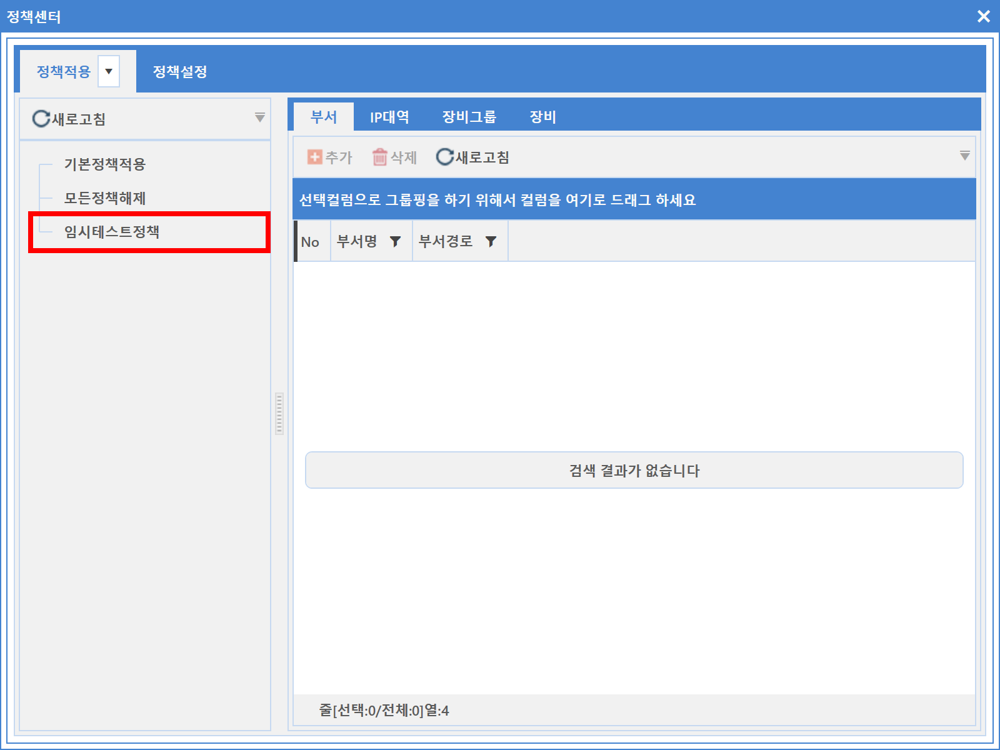
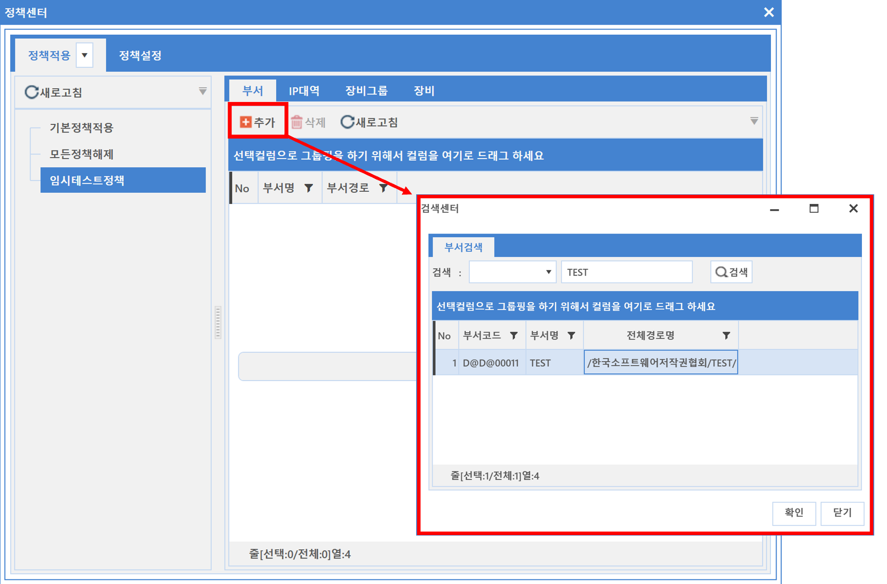
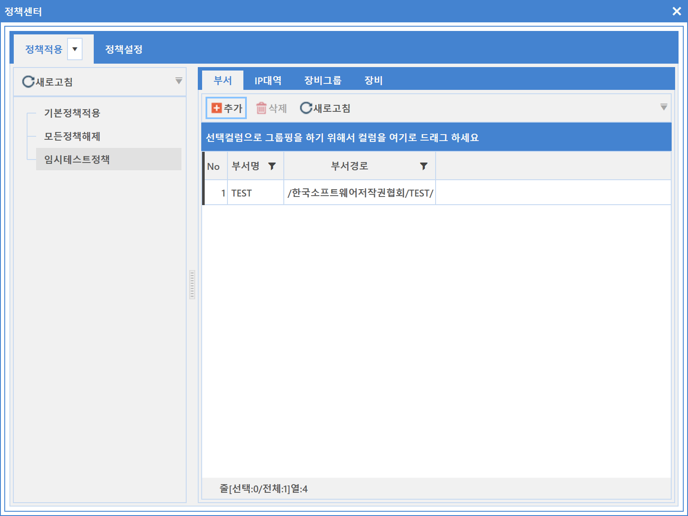

3-1-4-1-1. 정책기준 적용
3-1-4-1-1. 정책기준 적용
Source: https://www.sweeper.or.kr/etc/manual/3-1-4-1-1.html
3-1-4-1-1. 정책기준 적용
3. 공통 ›› 3-1. 도구 ›› 3-1-4. 정책센터 ›› 3-1-4-1. 정책적용 ››


3-1-4-2. 정책설정에서 생성한 다양한 정책에 대상(부서, IP대역, 장비그룹, 장비)을 지정합니다.
-
적용 방법
-
정책기준으로 변경

- 정책 선택

- 부서/IP대역/장비그룹/장비 선택 (부서선택의 예)

- 적용된 상태

참고사항
-
각각의 다른 정책들에 동일한 부서/IP대역/장비그룹/장비를 중복 지정할 수 없습니다.
-
'A'라는 정책에 "한국소프트웨어저작권협회" 부서를 지정하고, 'B'라는 정책에서 다시 "한국소프트웨어저작권협회" 부서를 지정할 경우, 'A'라는 정책에서 "한국소프트웨어저작권협회"는 자동 제외됩니다.
-
한 정책에서 혹은 여러 정책들에서 지정된 부서/IP대역/장비그룹/장비들은, 우선순위가 존재하며, 장비가 가장 높습니다.
-
부서 < IP대역 < 장비그룹 < 장비
-
'A'라는 정책에 "한국소프트웨어저작권협회" 부서를 지정하고, 'B'라는 정책에 "한국소프트웨어저작권협회" 부서의 장비인 "PC1"을 지정하면, "PC1"은 'B' 정책으로 수행됩니다.
-
정책이나 대상이 변경되면, 별다른 명령수행이 없어도, 해당 [부서/IP대역/장비그룹/장비]에 전달되어 수행됩니다.
© Copyright SWeeper Inc.. All Rights Reserved